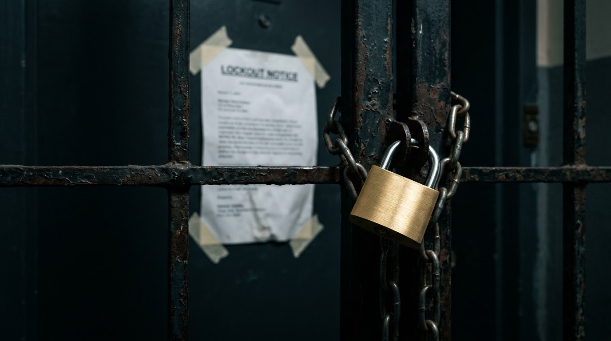
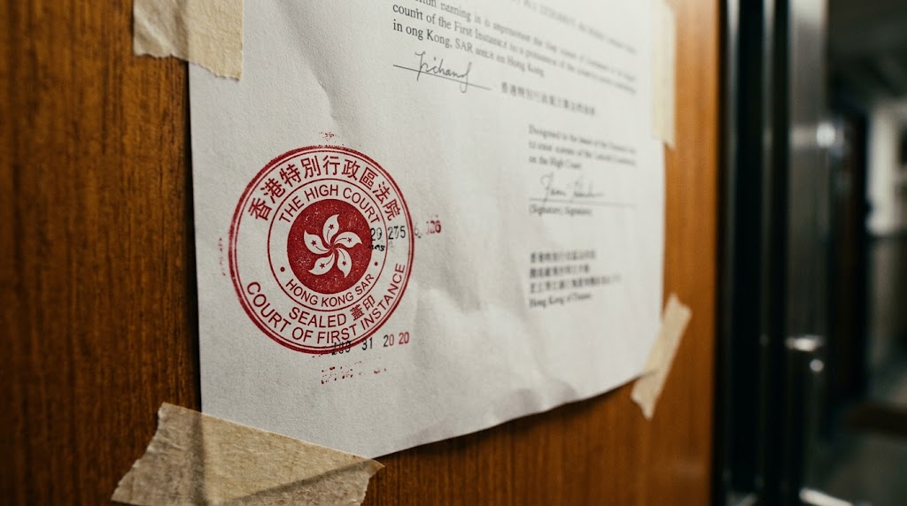

「他欠了我三個月租金，死都不肯搬，我上去剪斷他的水電、趁他不在把大門鎖換掉，有甚麼問題？我的物業，難道我做不了主？！」
這是收樓王團隊幾乎每星期都會聽到的憤怒吶喊。面對賴死不走的無賴租霸，很多業主在求助無門、心力交瘁之下，都會萌生「自行執法」的念頭。但作為累積處理過 300+ 宗收樓個案的專家團隊，我們必須在此嚴厲警告：千萬不要自己換鎖或斷水斷電！這正是職業租霸最渴望你走錯的一步死棋。
我還深刻記得早前的一個黃昏，業主陳先生面如死灰地來到我們的辦公室。為了一個月萬多元的租金，他差點由「受害者」變成面臨爆竊及恐嚇起訴的「刑事被告」...

長沙灣業主的崩潰與衝動
陳先生在長沙灣有一個兩房單位，租客起初看起來斯斯文文，但住了半年後就開始以各種理由拖欠租金：「公司遲出糧」、「下星期一定過數」、「屋企有事要周轉」。到了第三個月，租客甚至索性不聽電話、不回覆 WhatsApp，連大廈保安都說幾天沒見過他出入。
陳先生既要供樓，又要白白代繳差餉管理費，壓力爆煲。在聽信了網上討論區一些「鍵盤戰士」的教唆後，他決定趁租客不在家，找鎖佬把大門鐵閘的鎖芯全換掉，並在大門貼上一張手寫的「終止租約通知」。他以為，這樣租客就無計可施，只能乖乖交吉。
職業租霸的「反咬爆竊」陷阱
但他萬萬沒想到，這個看似完美的「自行收樓」行動，正中職業租霸的下懷。
當晚凌晨，陳先生接到警署的電話。原來租客發現換鎖後，第一時間沒有找陳先生，而是直接報警，聲稱屋內一隻價值十幾萬的勞力士手錶和幾萬元現金「不翼而飛」，並指控業主非法闖入及爆竊。
當晚，陳先生被迫到警署落口供。警員明確告訴他：在未經法庭頒令（執達吏收樓）的情況下，業主擅自換鎖令租客無法進入，隨時觸犯《業主與租客（綜合）條例》中的「侵擾罪」，最高可被判罰款及監禁。而且，現在涉及財物遺失，更牽涉刑事調查。
本來佔盡理據去追討欠租的陳先生，瞬間百口莫辯，更要花大筆律師費去處理刑事調查。租霸不但繼續霸佔單位，甚至以此作籌碼，反過來勒索陳先生給一筆「搬遷費」才肯銷案。
租客已經開始拖租、失聯，正考慮怎樣處理？
在採取任何行動前，先花 3 分鐘讓收樓王顧問為您免費評估最安全的合法方案。
合法程序才是業主唯一的護身符
面對租霸的無恥勒索，陳先生最終沒有妥協，而是帶著滿腔焦慮來到「收樓王」求助。
我們接手後，第一時間建議他交由律師應對警方的調查（由於租霸心知肚明，亦非大惡之人，最終銷案解決）。同時，我們的外勤與法律輔助團隊立即啟動了 100% 依循法例的收樓程序。
很多業主覺得法定程序「慢」，但這卻是保護你免受刑責、讓無賴無所遁形的唯一護身符。我們為陳先生代辦了所有繁瑣且容易出錯的步驟：
精準送達法律文件
確保通知書送達完全符合法庭要求，不讓租客有「收不到信」的藉口拖延。
入稟土地審裁處
代為準備表格及排期，避免業主因填錯字眼或漏交文件被法庭退件重頭來過。
申請收樓令及安排執達吏
由取得判決到執達主任上門破門，全程緊密跟進。

幾個月後，在執達吏和我們的陪同下，我們合法破門。租霸見到具備法律效力的法庭封條，知道再無任何灰色地帶可以鑽，只能灰溜溜地拿著私人物品離開。陳先生終於合法、安全地收回了單位，結束了這場惡夢。
自行換鎖 vs 合法收樓：四個關鍵差異
下表綜合本團隊處理香港住宅、村屋及商舖個案的實務經驗，對比兩條路線在法律風險、所需時間、實際成本及最終保障上的分別。
| 比較項目 | 自行換鎖／斷水斷電 | 經土地審裁處合法收樓 |
|---|---|---|
| 法律風險 | 可能觸犯「侵擾罪」或「非法剝奪佔用權」，最高可被判罰款及監禁，更可能被租客反過來索償。 | 依《土地審裁處條例》及相關程序進行，由執達主任執行法庭命令，業主不會因而負上刑事責任。 |
| 所需時間 | 看似「一日搞掂」，但租客一旦報警或入稟，連同民事索償可拖 6 至 12 個月，期間單位仍然被佔用。 | 文件齊備下一般約 3 至 4.5 個月；租客收到法庭文件後主動遷出，最快約 8 至 10 週。 |
| 實際成本 | 鎖匠及工程費以外，還可能加上賠償、罰款及律師費，總支出往往遠超追回的租金。 | 法庭費用、執達主任按金及顧問費，分段透明報價，開案前已清楚列明。 |
| 收回物業保障 | 租客可透過警方或法庭挑戰，業主有機會被要求讓租客重新入屋，前功盡廢。 | 取得管有權命令後由執達主任破門，業主可即時更換鎖芯，合法取得單位的實際控制權。 |
註：上表為一般性比較，實際時間及費用須視乎個案複雜程度、法庭排期及租客有否提出抗辯而定。
你的物業是資產，絕不應變成你的負債，
更不應成為讓你惹上官非的陷阱。
處理欠租問題，最忌意氣用事。自己動手，你可能要面對無日無之的精神折磨、潛在的刑事風險，以及無盡的法律糾紛；交給擁有處理 300+ 宗實戰經驗的「收樓王」，我們從文件預審、法庭程序到執達吏收樓全程包辦，讓你安枕無憂。
你的時間，不該浪費在無賴租客身上。
遇上租客欠租、失聯甚至惡意破壞？
切勿衝動行事！
立即點擊下方按鈕與我們的專業顧問進行免費初步評估，讓我們幫你合法、迅速地奪回物業控制權。
撰文／審閱：收樓王 EvictKing 實戰顧問團隊 ｜ 專注香港土地審裁處收樓及租務糾紛實務，累積逾 300 宗本地個案經驗。